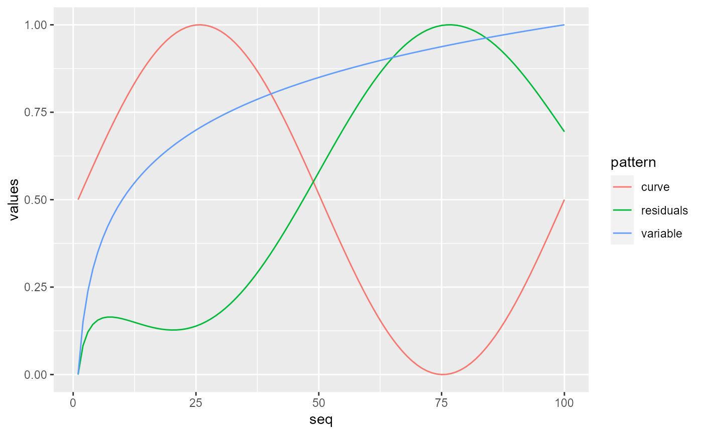

fit_curve.RdFits a curve to a numeric vector.
fit_curve(input, fn, rev = FALSE, normalize = TRUE)Numeric vector.
Character value. The function to call specified as a string.
Must be in output of validCurves().
If set to 1 or 'x' the fitted curve is returned reverted along the x-axis. If set to
2 or 'y' the fitted curve is returned reverted along the y-axis. (Depending on the curve 1 or
2 might not differ in the output. Compare fn = 'sinus' and fn = 'one_peak').
Logical. If set to TRUE numeric values will be scaled to values between one and zero.
Numeric vector.
This function takes a numeric vector of length x and returns
a numeric vector of the same length. The values of the returned vector correspond to
the values needed to display or work with the pattern specified in fn.
library(tidyverse)
library(confuns)
library(magrittr)
#> Warning: package ‘magrittr’ was built under R version 4.1.3
#>
#> Attaching package: ‘magrittr’
#> The following object is masked from ‘package:purrr’:
#>
#> set_names
#> The following object is masked from ‘package:tidyr’:
#>
#> extract
data.frame(variable = normalize(base::log(1:100))) %>%
dplyr::mutate(
curve = fit_curve(input = variable, fn = "sinus", normalize = TRUE),
residuals = (variable - curve) %>% normalize() ,
seq = row_number()) %>%
tidyr::pivot_longer(
cols = dplyr::all_of(x = c("curve", "residuals", "variable")),
names_to = "pattern",
values_to = "values") %>%
ggplot(mapping = aes(x = seq, y = values)) +
geom_line(mapping = aes(color = pattern))
